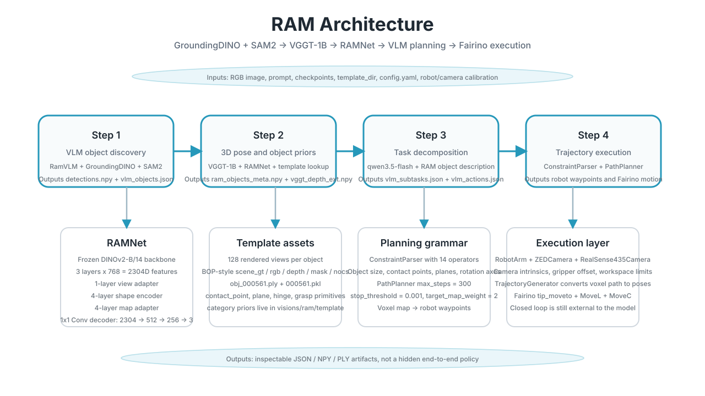
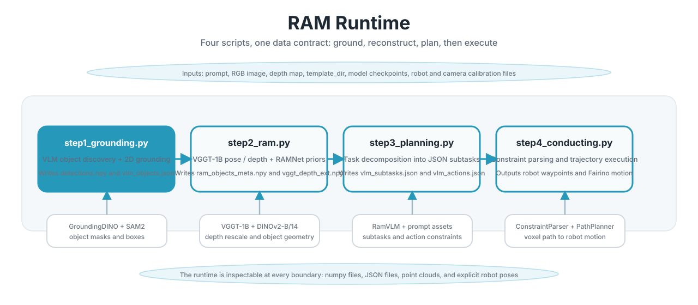

Retrieval-Augmented Manipulation
Object discovery, 3D reconstruction, template retrieval, and trajectory execution for object-centric robot manipulation
Overview
The public RAM code path treats manipulation as a retrieval problem first and a motion problem second: step1_grounding finds object instances in a live RGB frame, step2_ram lifts them into an explicit object-centric 3D representation, step3_planning turns that geometry into VLM subgoals, and step4_conducting converts those subgoals into Fairino waypoints.
The key boundary is the object contract, not the robot SDK. config/config.yaml pins ram_k=5, foundation_model=dinov2-b14, feat_layer=[7,9,11], img_size=224, n_pts=1024, and planner.map_size=100, so the entire stack has a fixed retrieval and planning shape.
Architecture

The runtime binds semantic discovery to geometry through GroundingDINO + SAM2, VGGT-1B, RAMNet, a VLM planner, and a deterministic trajectory layer.
RAMNet core
`visions/ram/lib/network.py` keeps the DINOv2-B/14 backbone frozen, reads features from layers `[7,9,11]`, expands them to a 2304D embedding, and passes them through a 1-layer view adapter, a 4-layer shape encoder, a 4-layer map adapter, and a `2304 -> 512 -> 256 -> 3` deformation decoder.
Runtime split
`step1_grounding.py` discovers objects, `step2_ram.py` estimates object pose and functional priors, `step3_planning.py` decomposes task language into constraints, and `step4_conducting.py` converts those constraints into robot waypoints.
Data Contracts
Each stage writes inspectable artifacts, which makes the pipeline debuggable without hidden state.
| Stage | Inputs | Outputs | Note |
|---|---|---|---|
step1_grounding.py |
Prompt + ZED RGB-D frame | instruction.json, rgb_ext.png, depth_ext.npy, vlm_objects.json, detections.npy, vlm_categories.json |
RamVLM filters RAM categories before GroundingDINO + SAM2 produce boxes and masks. |
step2_ram.py |
Detections + ZED / RealSense views + template assets | vggt_depth_ext.npy, vggt_K.npy, ram_objects_meta.npy |
VGGT-1B depth is rescaled from the stereo baseline before RAMNet predicts viewpoint, NOCS, grasps, and planes. |
step3_planning.py |
RAM object metadata + prompt | vlm_subtasks.json, vlm_actions.json |
Task text is decomposed into subgoals and action constraints through the VLM. |
step4_conducting.py |
Action JSON + object metadata + depth + camera pose | Robot waypoints + Fairino motions | ConstraintParser, PathPlanner, and TrajectoryGenerator own the motion boundary. |
Training and Template Prep
Training uses BOP-style rendered scenes generated by BlenderProc: the README shows --num-scenes 400 and --views-per-scene 25, while template preparation renders 128 views per object and stores the result as obj_<id>.ply plus <template_id>.pkl.
train_bop.py builds RAMNet from the DINOv2-B/14 checkpoint, freezes the foundation model, and optimizes with PoseNCE, NOCSLoss, and MatchLoss for up to 50 epochs, 2000 train steps, batch size 4, and learning rate 1e-4.
The template side is object-category specific: template.json drives loading of grasp_*, contact_point_*, hinge*, and plane_* primitives, so the runtime can recover object-specific affordances instead of generic boxes.
Runtime and Control

PathPlanner uses a 100^3 voxel map, max_steps=300, stop_threshold=0.001, target_map_weight=2, obstacle_map_weight=1, and pushing_skip_per_k=5. TrajectoryGenerator converts voxels to base-frame poses, clamps Z to table_height, and emits robot waypoints with orientation and gripper state.
controller/fairino_arm.py wraps the Fairino Robot.RPC interface and issues MoveL at velocity 60 and MoveC at velocity 20, plus gripper commands. The result is a conventional motion layer rather than an end-to-end policy.
The runtime SVG keeps the four scripts separate, which is the right shape for debugging camera calibration, depth rescaling, template lookup, and constraint parsing independently.
Results and Limits
The paper reports zero-shot real-world robot execution, spatially aware manipulation from a single 2D image, and adaptive replanning under physical constraints such as object size and collisions. It also reports CO3D generalization to unseen categories and robustness to shape and occlusion variation.
The local repo exposes the code path but not a benchmark logbook, so I treat the project as a reproducible public pipeline rather than a numbers-heavy claim.
What To Say In Interview
Object discovery
Explain how RamVLM filters categories, GroundingDINO returns xyxy boxes, and SAM2 turns them into masks on the source image plane.
Object-centric 3D
Explain how RAMNet fuses frozen DINOv2 tokens with position embeddings, choose indices, and template priors to predict view, NOCS, grasps, and planes.
Motion boundary
Explain how ConstraintParser turns VLM subgoals into gripper poses and how PathPlanner and TrajectoryGenerator convert them into Fairino motion.